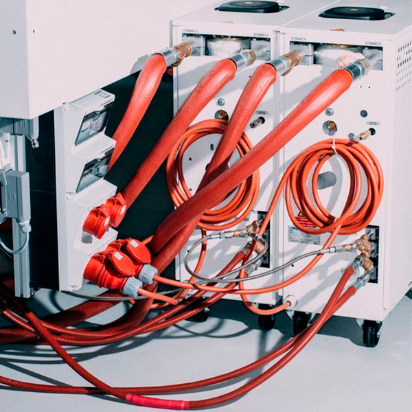

Apache HTTP Server es un servidor web de código abierto ampliamente utilizado que permite la publicación de sitios y aplicaciones web.
Su implementación dentro de una infraestructura de TI facilita el alojamiento de contenidos accesibles vía HTTP/HTTPS, ofreciendo estabilidad, escalabilidad y compatibilidad con múltiples plataformas.
En esta explicación se describen los pasos clave para poner en marcha Apache.
Zabbix es una herramienta de monitoreo de código abierto que permite supervisar el estado y rendimiento de servidores, redes y servicios en tiempo real.
Su implementación facilita la detección temprana de fallos, mejora la administración de recursos y ayuda a mantener la continuidad operativa.
En esta explicación se describen los pasos clave para poner en marcha Zabbix dentro de una infraestructura de TI.

TAPi (Telemetría y Administración de Plataformas informáticas) es una herramienta diseñada para el monitoreo, gestión y administración de recursos tecnológicos.
Su implementación permite supervisar el estado de los equipos, servicios y usuarios dentro de una red, facilitando la toma de decisiones y la solución de problemas de manera más ágil.
En esta explicación se presentan los pasos esenciales para poner en funcionamiento TAPi utilizando FreePBX.
La implementación de un Servidor Active Directory (AD) permite centralizar la gestión de usuarios, equipos y recursos dentro de una red. Con AD, es posible controlar accesos, aplicar políticas de seguridad y facilitar la administración del entorno informático.
En esta explicación se detallan los pasos básicos para configurar y poner en marcha un servidor AD, optimizando la organización y el control de una red empresarial.
Servidor FTP
La implementación de un servidor FTP (File Transfer Protocol) permite transferir archivos de manera eficiente entre dispositivos dentro de una red o a través de internet.
Este tipo de servidor es útil para compartir documentos, respaldos o cualquier tipo de archivo de forma centralizada y controlada. A continuación, se describen los pasos esenciales para instalar, configurar y poner en funcionamiento un servidor FTP
La implementación de un servidor DHCP (Dynamic Host Configuration Protocol) permite asignar automáticamente direcciones IP y otros parámetros de red a los dispositivos conectados.
Esto simplifica la administración de la red, evita conflictos de IP y mejora la eficiencia del proceso de conexión. En esta explicación se presentan los pasos clave para configurar
y poner en marcha un servidor DHCP dentro de una red local.